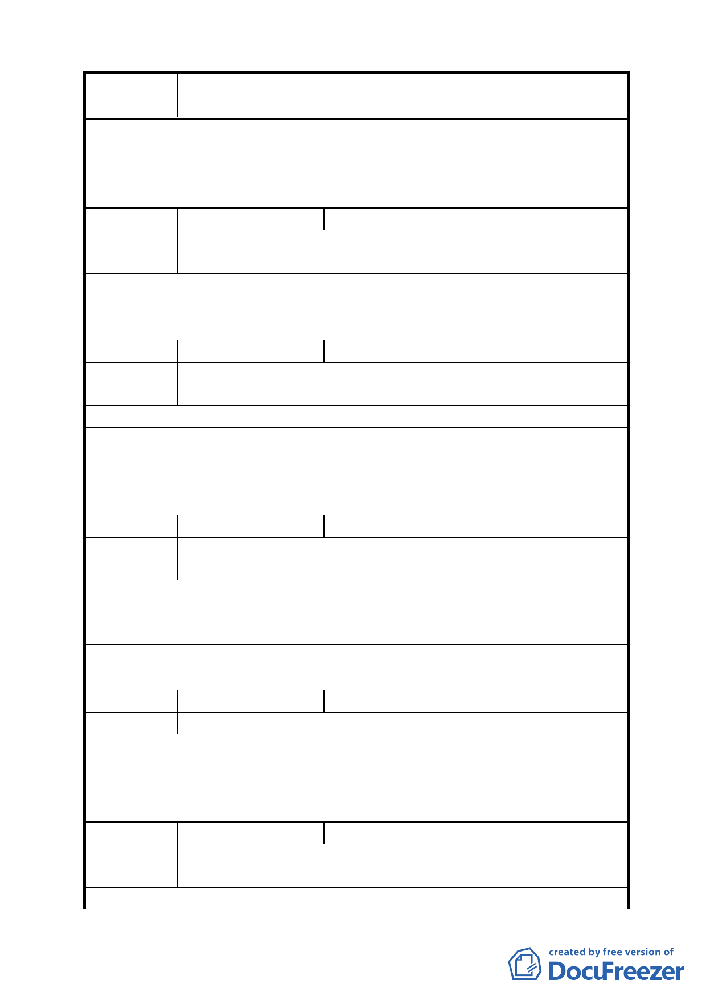

案名
修訂捷運系統南港線南港機廠交 33、33-1、33-2 交通用地土
地使用分區管制案
1.本案有關聯合開發作業，市府與其他土地所有權人權利義務
委 員 會 決 事宜，由市府本於權責依法辦理。
議 2.本會審議都市計畫案件，均通知該案陳情人到場旁聽，並得
登記發言陳述意見。
編號
陳情理由
2 陳情人 闕德川
原容積 160％，增加之 2.3％，對原被徵收地主有何補償與分
配權益？
建議辦法 都委會請通知原地主參與會議。
委員會決
議
同編號 1 委員會決議。
編號
陳情理由
建議辦法
3 陳情人 劉繼榮
1.聯合開發地主應有優先承購權承購。
2.鄰近土地應同時辦理都市計畫變更。
地主應有優先承購權。
1.本案有關聯合開發作業，市府與其他土地所有權人權利義務
委 員 會 決 事宜，由市府本於權責依法辦理。
議 2.有關本案鄰近土地是否有辦理都市計畫變更之需要，由市府
依地區整體發展需要另行檢討。
編號
4 陳情人 闕德榮
陳情理由
政府前徵收是用交通用地之手段強制取得小百姓之土地，而
地價又那麼低，每坪約只 8 萬元，您看合理嗎？
之前所簽訂之聯合開發是容積率 160％，現在容積率又要增
建議辦法 加，與當時之契約完全不同，本人建議增加之容積率 2.3％，
應將其中 30％分給地主才合理。
委 員 會 決 有關本案交通用地徵收及協議聯合開發作業，由市府本於權
議 責依法辦理。
編號
5 陳情人 闕山源
陳情理由 徵收目的不符土地使用，並非常不合理，因此需規定辦理補償。
建議辦法
1.聯合開發。
2.依規定辦理補償金額。
委員會決
議
同編號 4 委員會決議。
編號
陳情理由
6 陳情人 蘇柳
當初政府徵收土地為公共事業之需要，現變更為商業用途（聯
合開發），未與原地主取得共識。
建議辦法 補償其地價差額。
8